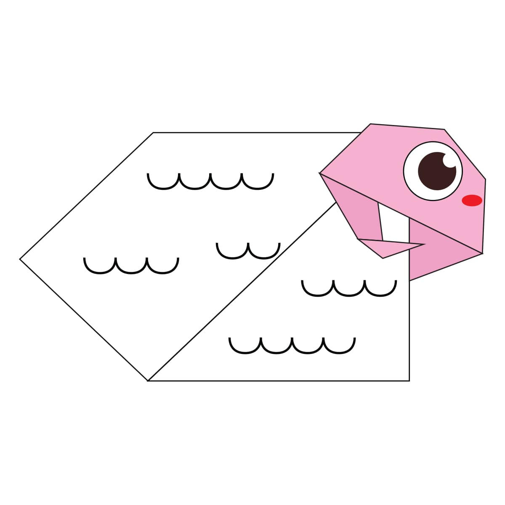
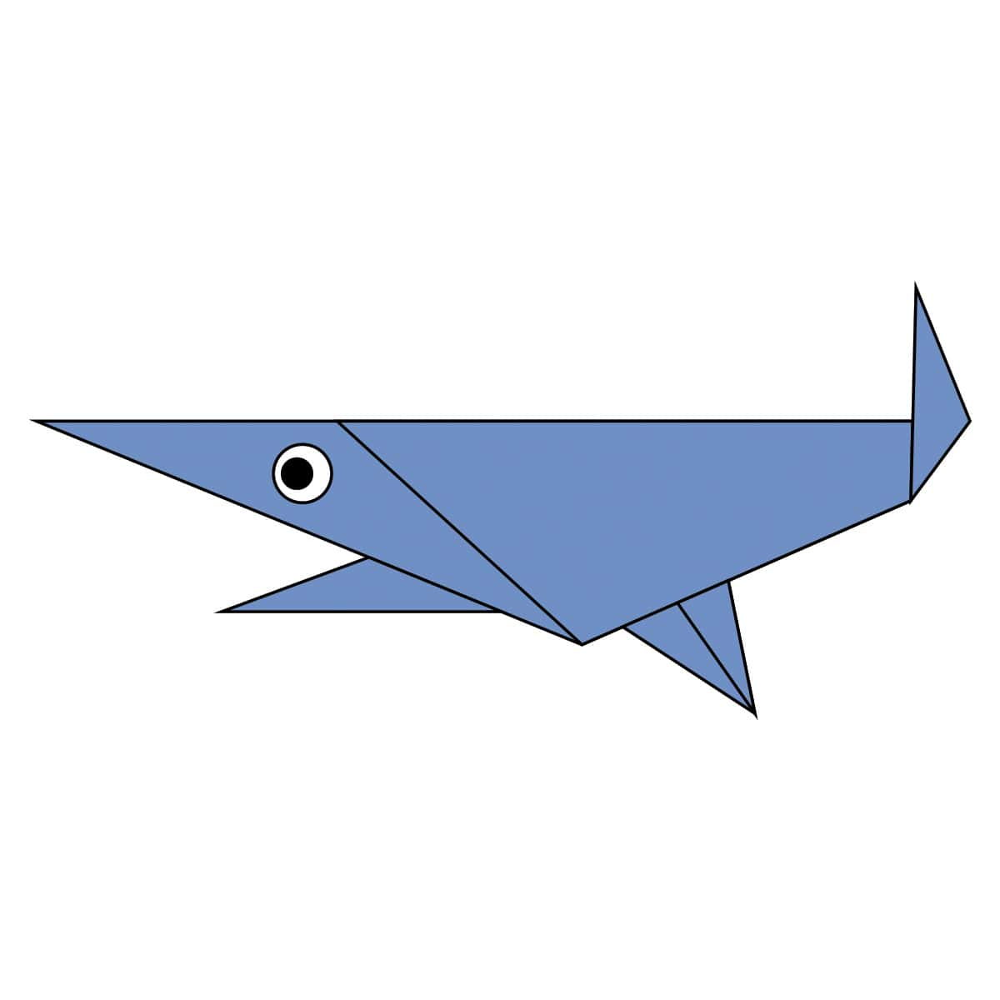

Camel
- Camel's ears are furry
- Camel can move easily across the sand because of its specially designed feet
- When they find water, they will drink as much as possible.

Chameleon
- Chameleons are reptiles that are part of the iguana suborder
- Changing skin color is an important part of communication among chameleons
- Most chameleons have a prehensile tail that they use to wrap around tree branches

Pigeon
- Pigeons are incredibly complex and intelligent animals
- Pigeons are renowned for their outstanding navigational abilities
- Pigeons have excellent hearing abilities.

Teddy Bear
- The Teddy Bears’ Picnic song was originally called The Teddy Bear Two Step
- Winnie the Pooh was based on a real bear

Panda
- Giant pandas are good at climbing trees and can also swim
- Pandas go from pink to white and black (or brown)
- Pandas are "lazy" — eating and sleeping make their day

Frog
- One gram of the toxin produced by the skin of the golden poison dart frog could kill 100,000 people.
- There is a frog in Indonesia that has no lungs – it breathes entirely through its skin.

Cicada
- All cicada species in North America came from a common ancestor
- cicada species switches from being on a 13-year cycle to a 17-year cycle

Dog
- Dogs noses are wet to help absorb scent chemicals
- The Beatles song ‘A Day in the Life’ has a frequency only dogs can hear
- A blind man and his guide dog hiked the Appalachian Trail

Sheep
- Female sheep are called ewes. Male sheep are called rams.
- Sheep have an excellent sense of smell
- There are over 1000 distinct breeds of sheep worldwide

Shark
- Sharks do not have bones.
- Shark skin feels similar to sandpaper.
- Sharks have special electroreceptor organs.